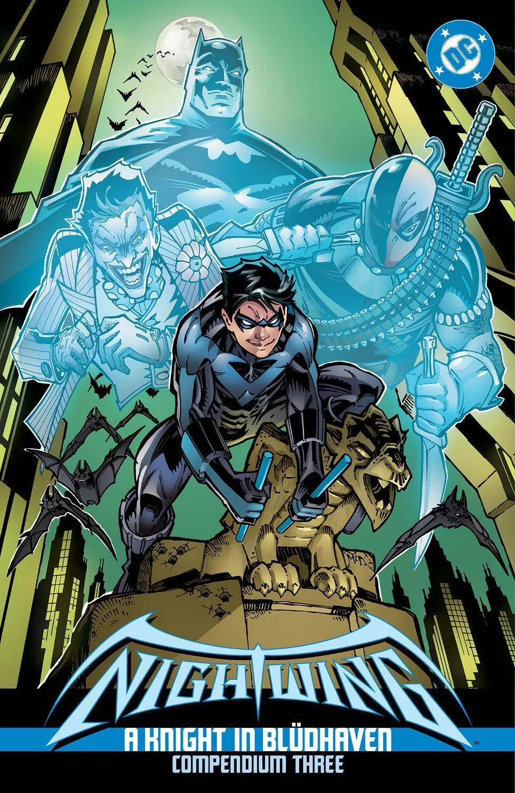
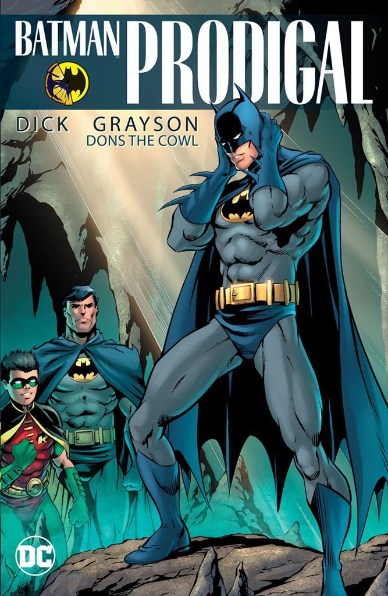
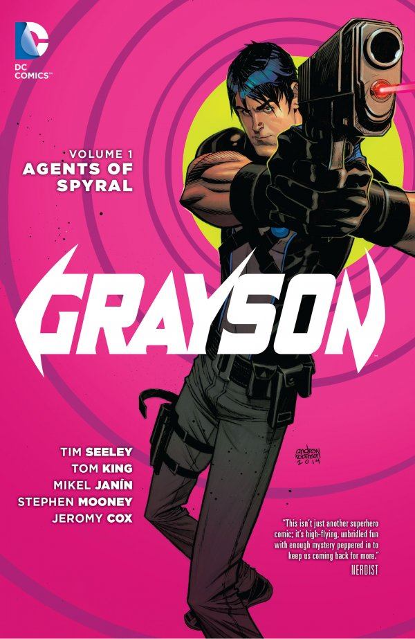
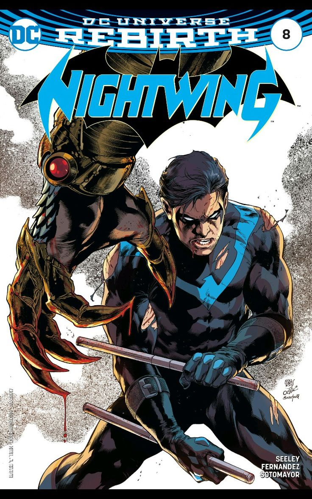

After leaving the Robin identity behind, Dick Grayson moved to Blüdhaven, a city plagued by corruption and crime. This era marked his true beginning as Nightwing, where he fought to protect a city that desperately needed a hero. Blüdhaven pushed him to grow as a leader and forced him to rely on his own instincts rather than Batman’s guidance.
During this time, Nightwing built new relationships, faced powerful enemies, and established himself as a symbol of hope for a city that had almost given up on justice.

With Bruce Wayne presumed dead, Dick stepped up and temporarily became Batman. He protected Gotham and guided Damian Wayne as the new Robin, proving his leadership and maturity. This period tested his confidence as he carried the weight of Gotham’s expectations on his shoulders.
Although he never intended to replace Bruce, Dick honored the mantle with respect and responsibility, showing the world that he could rise to the challenge when the city needed him most.

After his identity was exposed, Dick joined the spy agency Spyral as Agent 37. This arc explored stealth, espionage, and undercover missions that challenged his sense of identity. Without the mask, he had to rely on his intelligence, charm, and adaptability to survive.
The Agent 37 era showed a different side of Dick Grayson, pushing him into morally complex situations and forcing him to question what it truly means to be a hero.

Returning to the Nightwing mantle, Dick embraced a modern suit and a renewed mission. Rebirth re‑established him as a protector of Blüdhaven and a key figure in the DC Universe. This era focused on rebuilding his identity and strengthening his connection to the city he calls home.
Rebirth highlighted Nightwing’s growth, confidence, and commitment to forging his own legacy while staying true to the values that shaped him from the beginning.
Visit these websites to learn more: